Machine Learning in Epidemiology
An Introduction with Case Study of Predicting Extreme Centenarianism
Dr. Dor Atias, MD-MPH
Tel-Aviv University
2026-01-07
Learning Objectives
By the end of this lecture, you will be able to:
- Distinguish between machine learning and traditional epidemiological approaches
- Recognize when ML is appropriate vs. traditional methods
- Understand core ML concepts: the ML workflow, models, overfitting, cross-validation
- Implement ML workflows using R and tidymodels
- Evaluate model performance using appropriate metrics
- Apply explainable AI tools to interpret complex models
A roadmap for this lecture
-
This lecture is based on our published research: Machine learning in epidemiology: An introduction, comparison with traditional methods, and a case study of predicting extreme longevity - elaborated information can be found there
Prospective cohort of 10,059 middle-aged Israeli men, median entry age 49; 6.9% reached age ≥95.
Recruited in 1963, with repeat assessments in 1965 and 1968
Long-term follow-up to ensure capture of survival to advanced ages
The target outcome is near-centenarianism, defined pragmatically as survival to age 95 years or older (rather than ≥100, due to rarity).
The prediction task is a supervised, individual-level binary classification: using midlife predictors spanning demographic, clinical, lifestyle/physical activity, occupational, family, and dietary factors (146 modeled variables) to predict who will reach ≥95 years.
The data in this lecture was synthetically made with synthpop package in R based on the original dataset
The scripts and data for this lecture can be found in my GitHub repository
StatQuest website and YouTube channel by Josh Starmer - great resource for learning ML concepts
Why Machine Learning in Public Health?
What is Machine Learning?
“The field of study that gives computers the ability to learn without being explicitly programmed”
— Arthur Samuel (1959)
Why ML in Healthcare Now?
📊 The Data Revolution
Exponential Growth:
- Electronic health records everywhere
- Genomics becoming routine
- Wearable devices widespread
- High-resolution medical imaging
We’re drowning in data but starving for insights
🧩 Complex Medical Challenges
New Complexities:
- Multiple chronic conditions per patient
- Rare diseases being recorded
- High dimensional data
- Dynamic health trajectories
Traditional methods hit their limits
🎯 Personalized Medicine Era
Individual Focus:
- Risk assessment individualized
- Dosing optimized per person
- Genetic guided therapies
- Tailored prevention strategies
One-size-fits-all is obsolete
💻 Technology Enablers
Infrastructure Ready:
- Cloud computing democratized
- GPU processing power accessible
- Open-source tools proliferated
- Storage costs plummeted
The computational barrier dissolved
🧠 Machine Learning: The Perfect Bridge
🗂️ Handles High-Dimensional Data Thousands of variables? No problem.
🔍 Discovers Hidden Patterns Finds relationships humans miss.
⚙️ Automates Feature Learning Less manual engineering needed.
⚡ Scales with Data Growth More data = better performance.
Note
Before: We had either data OR computing power OR methods—never all three.
Now: Data explosion + cloud computing + ML algorithms = Healthcare transformation
Prediction vs. Causation: Different Tools for Different Questions
Traditional Epidemiological Methods
Causal inference focus: understanding mechanisms
Clear parametric assumptions
Linear relationships
Need for Pre-specified interactions
Relatively parsimonious models
Interpretable coefficients
“Does smoking cause cardiovascular disease?”
Machine Learning Methods
Optimizing predictions
Flexible model assumptions
Non-linear relationships
Discover unknown patterns and complex interactions
High-dimensional datasets (Large p, p>N)
Complex models: “black box” by nature
“Who will develop cardiovascular disease?”
Important
Machine learning can also be used for causal inference, but this is outside the scope of this lecture
Core Concepts of Machine Learning
Machine Learning Workflow for Epidemiological Research

Key Insight
When using machine learning it is not just algorithms, it’s a systematic process. Each step is crucial for success.
Supervised vs. Unsupervised Learning
Supervised Learning
“Learning with a teacher”
- Known outcomes (labels)
- Learn input → output mapping
- Like medical diagnosis training
- Examples: Predicting disease, mortality risk
Unsupervised Learning
“Finding hidden patterns”
- No known outcomes
- Discover structure in data
- Like organizing library without categories
- Examples: Patient clustering, pattern discovery, disease subtyping
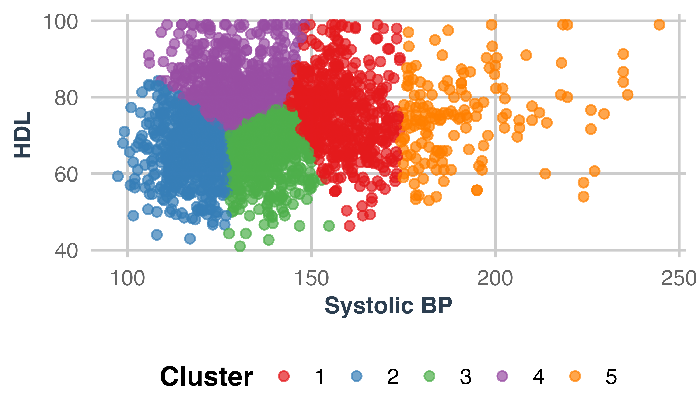
Machine Learning Beyond LLMs
Machine learning and AI are not limited to the large language models (LLMs) everyone hears about today. In this lecture, we focus on supervised learning models.
Logistic Regression
Mathematical Foundation
Maximizes the likelihood function:
\[\text{Likelihood}(\theta) = \prod_{i=1}^{m} [\hat{y}^{(i)}]^{y^{(i)}} [1 - \hat{y}^{(i)}]^{1-y^{(i)}}\]
Key Characteristics
- High interpretability: Coefficients have direct clinical meaning
- Reseachers involvement: Manual variable selection and interactions
- Linear assumption: Assumes linear relationship between predictors and log-odds
- Cannot handle missing data: Needs complete cases or imputation
- Limited to p < N scenarios: Not suitable when predictors exceed observations
Logistic Regression Results: Predictors of Centenarianism
| Predictor | Odds Ratio | 95% CI Lower | 95% CI Upper | P-value |
|---|---|---|---|---|
| Systolic Blood Pressure (per 10 mmHg) | 0.837 | 0.800 | 0.876 | < 0.001 |
| Ex-Smoker | 0.909 | 0.730 | 1.131 | 0.391 |
| 1-10 Cigarettes/Day | 1.074 | 0.868 | 1.330 | 0.512 |
| 11-20 Cigarettes/Day | 0.452 | 0.348 | 0.587 | < 0.001 |
| 20+ Cigarettes/Day | 0.483 | 0.380 | 0.615 | < 0.001 |
| Myocardial Infarction | 1.105 | 0.834 | 1.465 | 0.487 |
| Diabetes Mellitus | 0.901 | 0.669 | 1.212 | 0.491 |
| Body Mass Index | 0.985 | 0.961 | 1.010 | 0.235 |
Loss Function: “The Cost of Being Wrong”
Model training = Optimization.
In classical stats we maximize likelihood. In ML we typically minimize a loss.
What is a Loss Function?
Definition: Quantifies how much we “pay” for incorrect predictions
Likelihood rewards models that assign high probability to what actually happened
Negative log converts that into a penalty: smaller is better
Logistic regression training = minimizing log-loss on training data
Different loss functions for algorithms: e.g., squared error for regression, log-likelihood etc.
Key Insight
The loss function directly shapes what the model learns. Choose wisely based on your clinical priorities!
Logistic Regression Loss Function
For binary classification (like Centenarianism prediction):
\[\text{Log-Loss} = -\frac{1}{m} \sum_{i=1}^{m} [y^{(i)} \log(\hat{y}^{(i)}) + (1 - y^{(i)}) \log(1 - \hat{y}^{(i)})]\]
Where:
\(y_i\) = actual outcome (0 or 1)
\(\hat{y}^{(i)}\) = predicted probability
\(m\) = number of observations
Intuition:
When \(y_i = 1\) and \(\hat{y}^{(i)}\) is small → Large penalty
When \(y_i = 0\) and \(\hat{y}^{(i)}\) is large → Large penalty
Perfect predictions → Zero loss
Can we predict too well?
Yes! Overfitting occurs when a model learns noise instead of signal, leading to poor performance on new data.
The Bias-Variance Trade-off
Key Concepts
Bias: measures how far off, on average, a model’s predictions are from the ground truth values.
Variance: measures how much a model’s predictions change with different training datasets
Underfitting occurs when the model is too simple, bias is high
Overfitting occurs when the model is too complex, variance is high
Sweet spot: Balanced complexity for your data

Important
Bias = systematic error | Variance = prediction inconsistency
The Overfitting Problem (Student Learning Analogy)
Definition: Model learns noise instead of signal
Memorizer (Overfitted):
Knows textbook word-for-word
Can’t answer new questions
Fails when context changes
Excellent on practice tests - Poor on real exam
Understander (Well-fitted):
Grasps underlying concepts
Applies knowledge to new situations
Adapts to different contexts
Good on both practice and real tests

Overfitting: “Memorizing vs. Understanding”
Warning Signs
- Perfect training scores: Usually too good to be true
- Large gap: Training accuracy >> Test accuracy
- Complex model: Too many parameters for data size
- Unstable predictions: Small data changes → big prediction changes
Prevention Strategies
Validation: Hold out test data
Cross-validation: Multiple honest estimates
Regularization: Penalize complexity
Early stopping: Stop before overfitting begins
Remember: Overfitting is ML’s Greatest Enemy
Always validate on truly unseen data. If it seems too good to be true, it probably is!
Train/Test Split: Why Do We Split Our Data?
The Fundamental Problem
- Goal: Build models that work on new, unseen patients
- Challenge: We only have the data we collected
- Solution: Simulate “unseen” data by holding some back
What Happens Without Proper Splitting?
- Overly optimistic performance: Model appears better than it really is
- Overfitting detection: Can’t tell if model learned noise vs. signal
- Poor generalization: Model fails when deployed in practice
Train/Test Split: How to Split
Common Split Ratios:
- 75/25: Good balance for moderate sample sizes (n > 1,000)
- 80/20: When you have large datasets and need more training data
- 70/30: When you have smaller datasets and need robust testing
Special Considerations for Epidemiological Data
- Well-balanced outcomes: Random splits usually suffice
- Class Imbalance: Stratify splits to maintain outcome proportions
- Temporal Data: Use time-based splits to mimic real-world prediction
- Clustered Data: Split by site or cluster to avoid leakage

Regularization
The Regularization Concept
Core Idea: Prevent overly complex models
- Occam’s Razor: Simpler explanations are usually better
- Biological basis: Parsimonious models often generalize better
- Prevents overfitting: Stops model from memorizing noise
Types of Regularization
L1:
Based on absolute values of coefficients
Variable selection: Can set coefficients exactly to zero
Creates sparse models
e.g., LASSO regression
L2:
Based on squared values of coefficients
Shrinks coefficients toward zero (but none to zero)
Good when all predictors are somewhat relevant
e.g., Ridge regression
Mix:
Combines LASSO and Ridge
Balances variable selection with coefficient shrinkage
e.g., Elastic Net
LASSO Regression (Least Absolute Shrinkage and Selection Operator)
A regularized version of logistic regression that adds a penalty to the loss function to shrink coefficients.
Key Characteristics
- Automatic feature selection: Shrinks unimportant coefficients to zero
- Regularization: λ hyperparameter controls shrinkage amount
- Handles high-dimensional data: Can work when p > N
- Maintains interpretability: Similar to logistic regression
Advantages Over Standard Logistic Regression
- Prevents overfitting through regularization
- Automatically selects relevant variables
- Handles multicollinearity better
- Works with high-dimensional datasets
Remember: LASSO is still a form of logistic regression
Just with added regularization. It still assumes linear relationships and requires careful preprocessing.
LASSO under the Hood
Mathematical Foundation
LASSO adds a regularization term to penalize coefficient magnitude:
\[\text{Cost}(y, \hat{y}) = -\frac{1}{m} \sum_{i=1}^{m} [y^{(i)} \log(\hat{y}^{(i)}) + (1 - y^{(i)}) \log(1 - \hat{y}^{(i)})] + \lambda \sum_{j=1}^{n} |\beta_j|\]
Mathematical Penalty
\[\text{Total Cost} = \text{Loss Function} + \lambda \times \text{Penalty}\]
- \(\beta_j\): Coefficients for each predictor
- \(\lambda\) (lambda): Regularization strength
- Higher \(\lambda\) = More aggressive pruning
LASSO Coefficient Comparison: Different Penalties

How can we tell whats the best penalty?
The best penalty (λ) is typically chosen in hyperparameter tuning via cross-validation, selecting the value produce the optimal model performance.
Hyperparameters: “Adjusting the Recipe”
What are Hyperparameters?
Hyperparameters are configuration settings that we must specify before training a machine learning model begins.
“Recipe” - like oven temperature and cooking time - that control how your algorithm learns from data.
Key Characteristics:
- Not learned from data: We set them manually based on systematic testing
- Control the learning process: They determine how the algorithm behaves during training
- Model-specific: Different algorithms have different hyperparameters
- Critical for performance: Poor hyperparameter choices can lead to suboptimal models and effect computational requirements
Examples in Epidemiology:
- LASSO regression: The penalty parameter (λ) that controls how much we shrink coefficients
- Random Forest: Number of trees, maximum tree depth, minimum samples per leaf
- XGBoost: Learning rate, tree depth, number of boosting rounds
Hyperparameters: How to Tune Them?
Step 1: Define the Search Space
-
Grid Search: Exhaustively tests all combinations in a pre-defined grid of hyperparameters.
- Good for: The parameter ranges are small, well-understood, and computationally cheap to evaluate.
- Example: Testing λ values [0.001, 0.01, 0.1, 1.0, 10.0]
-
Random Search: Randomly samples parameter combinations uniformly across the search space.
- The space is large, but only a subset is worth exploring
- Often finds near-optimal results faster than grid search
-
Space-Filling Designs: Systematically samples combinations to cover the search space evenly without redundancy.
- Good for: When you want efficient coverage without exhaustive evaluation
- Common in model tuning with limited runs
Key Principle
The choice of search space should align with your optimization strategy. Different methods explore parameter combinations in distinct ways.
Hyperparameters: Visualizing the Search Space
Hyperparameters: How to Tune Them?
Step 2: Choose Evaluation Strategy
Hold-out validation: Simpler but less reliable
Cross-validation: Most robust for estimating performance
What Is Cross-Validation?
Cross-validation (CV) divides your training data into multiple (k) folds to get more robust estimates of model performance during hyperparameter tuning.
- Divide training data into k equal parts (typically k=5 or k=10)
-
For each hyperparameter combination:
- Train model on k-1 folds
- Test on the remaining fold
- Repeat k times (each fold serves as validation once)
- Average performance across all k tests

Key Principle
Cross-validation improves model reliability by reducing overfitting, maximizing data use, and quantifying uncertainty.
It averages performance across multiple validation folds, ensuring stable hyperparameter selection even with limited epidemiological data.
Hyperparameters: How to Tune Them?
Step 3: Select Optimization Metric
Choose based on your epidemiological context:
Classification tasks: AUC-ROC, accuracy, F1-score
Rare diseases: Use Precision-Recall AUC instead of ROC-AUC
Risk prediction: Consider calibration alongside discrimination
Screening tools: Prioritize sensitivity (catch all cases)
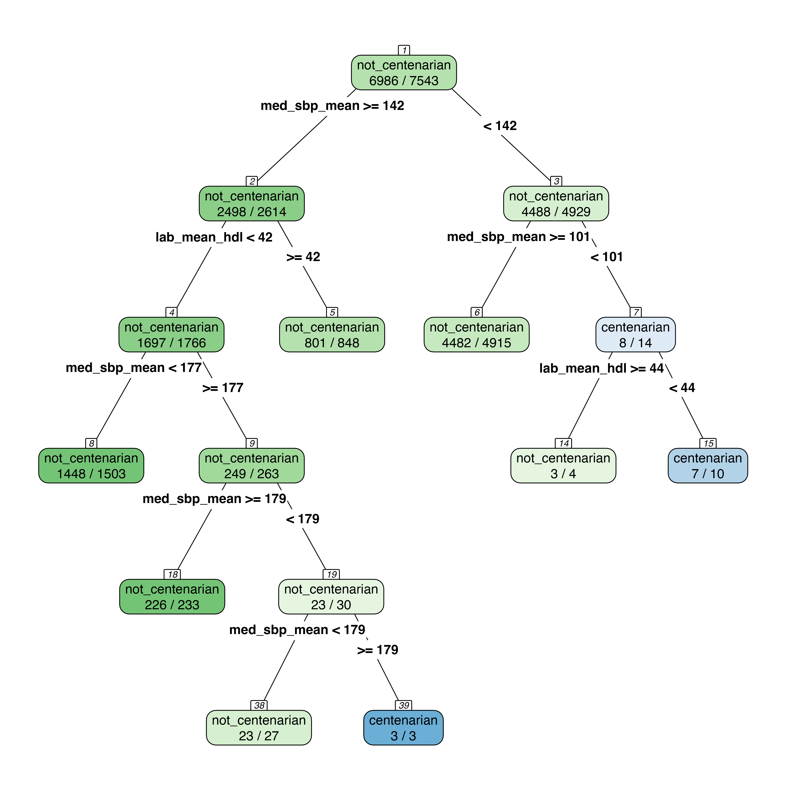
Quick recap — Core concepts
- Loss — Model error measure (e.g., log‑loss for binary); lower is better.
- Bias vs Variance — Bias = underfit; Variance = overfit. Balance via complexity & data.
- Train / Test split — Hold out unseen data. Stratify for imbalance; avoid leakage.
- Hyperparameters — Pre-training knobs (λ, trees, depth, η). Tune with grid, random, or Latin‑hypercube searches.
- Regularization — Penalizes complexity: L1 → sparsity; L2 → shrinkage; Elastic Net → both. Choose λ via CV.
- Cross‑validation — k‑fold (stratify when needed); select metric that matches the clinical aim.
Tip
Align loss & metric with the clinical question, prevent data leakage, tune with appropriate CV, and report final performance on a held‑out test set.
Decision Trees
Decision Trees are intuitive, non-parametric models that recursively split data to achieve homogenous outcome groups, effectively mimicking clinical decision-making processes.
Decision Tree Architecture
- Root Node: Represents the entire dataset before any splits
- Internal Nodes: Decision points based on feature values
- Branches: Outcomes of decisions leading to further nodes
- Leaf Nodes: Final outcome predictions (class labels or continuous values)
Key Characteristics
- Non-parametric architecture: No assumptions about data distribution or linear relationships
- Automatic interaction detection: Naturally captures variable interactions through hierarchical splits
- Handles mixed data types: Works with both continuous and categorical predictors natively
- Interpretable: Easy to understand and explain to clinicians

Descision Trees - under the hood
Mathematical Foundation
Decision trees split data using decision criteria, similar to clinical flowcharts, to create homogeneous (pure) groups with each split. Common metrics include Gini impurity, enthropy and information gain.
\[\text{Total Gini} = \sum_{j=1}^{L} \frac{N_j}{N} \times \left(1 - \sum_{i=1}^{c} p_{ij}^2\right)\]
Where:
\(L\) = number of leaf nodes in the tree; \(N_j\) = number of samples in leaf node \(j\); \(N\) = total number of samples in the dataset; \(1 - \sum_{i=1}^{c} p_{ij}^2\) = Gini impurity of leaf node \(j\); \(c =\) the number of classes; \(p_{ij}\) = proportion of class \(i\) in leaf node \(j\)
Mathematical Intuition
Gini = 0: Perfect classification (all samples same class)
Gini = 0.5: Maximum impurity for binary classification (50-50 split)
Perfect tree: Total Gini = 0 (all leaves are pure)
No splits: Total Gini = original root Gini
Larger leaves contribute more to the total impurity due to weighting by \(\frac{N_j}{N}\)
Decision Trees hyperparameters
cost_complexity: Penalty for tree complexity (higher = simpler trees)
tree_depth: Maximum depth of the tree (higher = more complex)
min_n: Minimum samples required to split a node (higher = fewer splits)
Warning
Decision trees are intuitive but prone to overfitting and thus rarely used alone. They serve as the building blocks for more robust ensemble methods like Random Forest and XGBoost.
Random Forest: Wisdom of the Crowd
Random Forest is an ensemble of decision trees (forest) that combines many trees trained on bootstrap samples, using the random feature selection at each split (which de‑correlates trees).
Key Characteristics
Bootstrap Aggregating (Bagging):
Create many bootstrap samples from training data
Train decision tree on each sample
Average predictions across all trees
Feature Randomness: At each bootstrap, consider only \(\sqrt{p}\) randomly selected features (where \(p\) = total features)
Mathematical Foundation
Ensemble Prediction: \[\hat{y} = \frac{1}{B} \sum_{b=1}^{B} \hat{f}_b(x)\]
Where \(\hat{f}_b\) is the \(b\)-th tree trained on bootstrap sample
De-correlated trees: Random feature selection ensures trees are diverse
Variability reduction: Bagging reduces variance by averaging multiple trees
Robustness: Handles outliers and noise well
All these lead to less overfitting
eXtreme Gradient Boosting (XGBoost) - under the hood
Algorithm Overview
XGBoost employs sequential ensemble learning where each tree corrects errors from previous learners, building weak decision trees that collectively form a powerful predictor.
How XGBoost Works
Step 1: Start with initial prediction (typically 0.5)
Step 2: Calculate pseudo-residuals (errors from previous predictions)
Step 3: Build trees to predict residuals using similarity scores
Step 4: For each split calculate the gain to find optimal splits
Step 5: Prune using gamma (complexity parameter, if gain < γ, do not split)
Step 6: The prediction is scaled by a learning rate (η) and added to the ensemble’s overall prediction.
Step 7: Repeat Steps 2-6 for a specified number of trees or until convergence.
Similarity Scores:
\(\text{Similarity} = \frac{(\sum \text{residuals})^2}{\sum [\text{previous probabilities} \times (1 - \text{previous probabilities})] + \lambda}\)
When residuals are similar, they don’t cancel out → high similarity score.
When residuals are different, they cancel out → low similarity score.
\(\text{Gain} = \text{Similarity}_{\text{left}} + \text{Similarity}_{\text{right}} - \text{Similarity}_{\text{root}}\)
Regularization Effects:
Lambda (λ) > 0: Shrinks similarity scores → easier pruning → prevents overfitting
Gamma (γ): Sets minimum gain threshold for splits → controls tree complexity
Learning Rate (η):
Takes “small steps in the right direction”
empirical evidence shows many small steps outperform few large steps.
XGBoost - under the hood
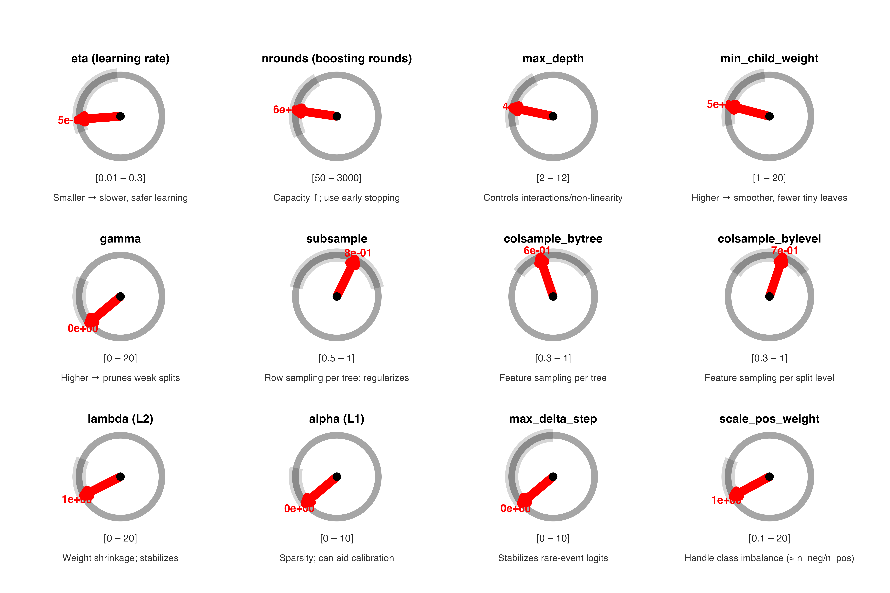
XGBoost
Key Characteristics
- Ensemble method: Combines multiple weak learners sequentially
- Gradient boosting: Each tree learns from previous trees’ errors
- Built-in regularization: λ (lambda) prevents overfitting by shrinking similarity scores
- Automatic pruning: γ (gamma) removes branches that don’t improve gain sufficiently
- Built-in feature selection: Automatically prioritizes important variables
- Handles outliers & missing data: Native missing value support without imputation
- Complex relationships: Captures non-linear patterns and interactions
Limitations
- Black box nature: Requires post-hoc explanation methods (SHAP)
- Computational intensity: More resources than simpler models
- Hyperparameter sensitivity: Multiple parameters (η, λ, γ, max_depth and more) require tuning
- Overfitting risk: Despite regularization, still needs careful cross-validation
Common XGBoost Hyperparameter
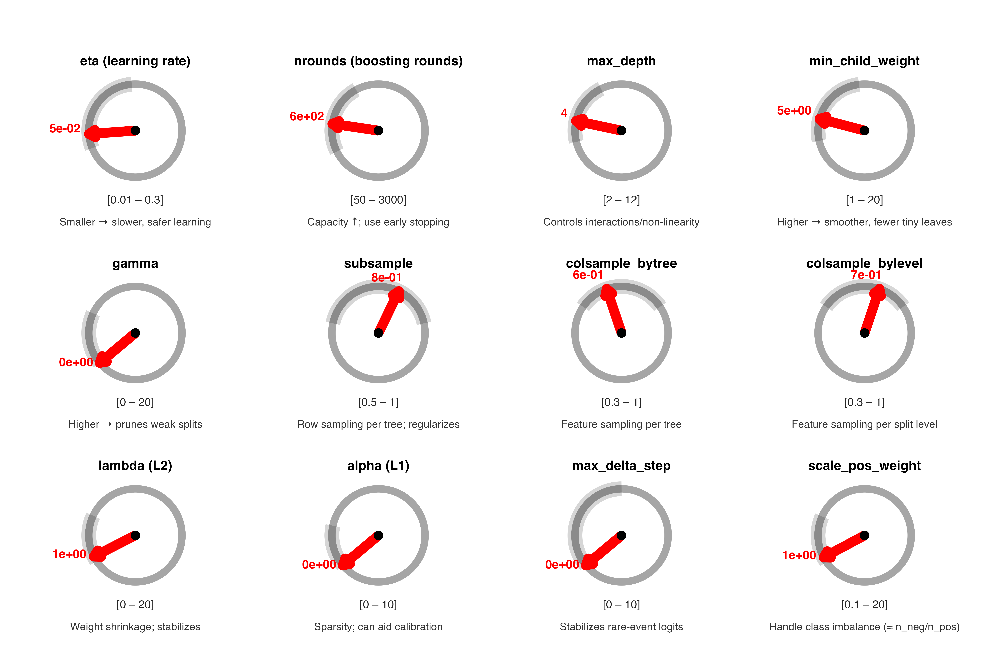
Neural Networks: The Foundation of Modern AI
What are Neural Networks?
Neural networks are computing systems inspired by biological neural networks that learn patterns through interconnected nodes (neurons) organized in layers.
Key Characteristics
- Layered architecture: Input layer → Hidden layer(s) → Output layer
- Weighted connections: Each connection has a learnable weight
- Activation functions: Non-linear transformations (sigmoid, ReLU, tanh)
- Backpropagation: Algorithm that adjusts weights to minimize prediction errors
- Universal approximators: Can theoretically learn any continuous function
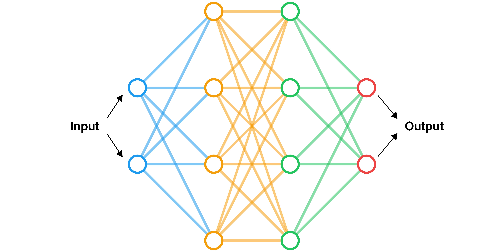
Connection to LLMs
Neural networks form the foundation of Large Language Models (LLMs) for Deep Learning, “GPT” and “Attention Mechanisms”
Neural Networks: Strengths and Limitations
Excellent Performance On:
- Images/Video: Medical imaging, radiology, pathology slides
- Sound/Audio: Heart murmurs, lung sounds, speech patterns
- Text/Language: Clinical notes, literature mining, patient communications
- Sequential data: Time series, patient trajectories, treatment sequences
Why They Excel Here:
- Spatial patterns: Convolutional layers detect local features
- Temporal patterns: Recurrent layers capture sequences
- Hierarchical learning: Lower layers learn simple patterns, higher layers combine them
- End-to-end learning: Automatically learn optimal feature representations
Usually Not as Good on Tabular Data
Epidemiological datasets are typically tabular:
- Limited spatial/temporal structure: Most epidemiological data lacks the spatial or sequential patterns that neural networks excel at
- Feature engineering matters more: Traditional ML methods often perform better with well-engineered features
- Interpretability trade-offs: Neural networks are “black boxes” - harder to understand than logistic regression or trees
- Sample efficiency: Often need very large datasets to perform well
- Overfitting prone: Can memorize patterns in smaller datasets
Key Takeaway
While neural networks power modern AI breakthroughs like LLMs, they’re not always the best choice for epidemiological prediction. For most epidemiological prediction tasks, start with simpler methods (logistic regression, XGBoost) before considering neural networks.
Performance Metrics: Choosing the Right Measure
Understanding Your Epidemiological Context
The choice of performance metric should align with your clinical goals and the characteristics of your outcome.
Types of Metrics
- Discrimination: Can the model rank patients by risk?
- Classification: At a specific threshold, how well do we classify patients?
- Calibration: Are the predicted probabilities accurate?
Discrimination Metrics: “Can the model rank patients by risk?”
ROC-AUC (Area Under Receiver Operating Characteristic Curve)
- Range: 0.5 (random guessing) to 1.0 (perfect discrimination)
- Interpretation: Probability that model ranks a random case higher than a random control
- Good for: Balanced outcomes, general screening tools
- Clinical use: Risk stratification, identifying high-risk patients
- Ranges: <0.6 poor, 0.6-0.7 fair, 0.7-0.8 good, 0.8-0.9 very good, >0.9 excellent
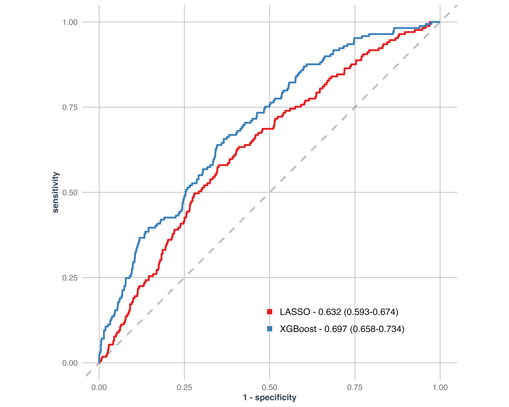
Discrimination Metrics: “Can the model rank patients by risk?”
Precision-Recall AUC
- Better than ROC-AUC when outcome is rare (< 10% prevalence)
- Precision: Of those flagged as high-risk, how many truly are? (PPV)
- Recall: Of all true cases, how many did we catch? (Sensitivity)
- Clinical use: Rare disease screening, adverse event prediction
- Ranges: Higher is better; Cutoffs depend on outcome prevalence
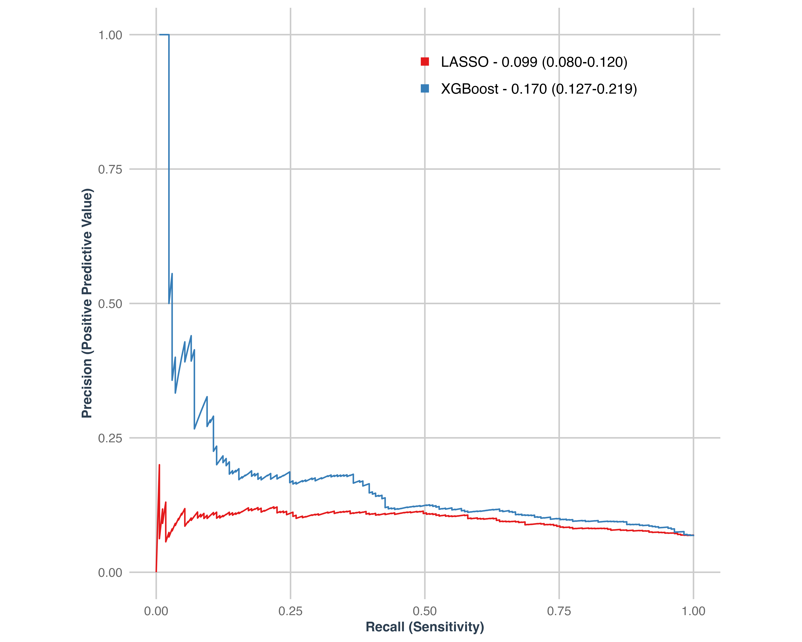
Classification Metrics: “At a specific threshold, how well do we classify?”
1. Sensitivity (Recall, True Positive Rate)
- Formula: TP / (TP + FN)
- Clinical question: “Of all people with the disease, how many did we correctly identify?”
- Priority when: Missing cases is very costly (cancer screening, infectious disease outbreaks)
2. Specificity (True Negative Rate)
- Formula: TN / (TN + FP)
- Clinical question: “Of all healthy people, how many did we correctly identify as healthy?”
- Priority when: False alarms are costly (invasive procedures, patient anxiety)
3. Positive Predictive Value (Precision)
- Formula: TP / (TP + FP)
- Clinical question: “Of those we flagged as positive, how many actually have the disease?”
- Affected by: Disease prevalence in population
- Clinical use: Informing patients about test results
4. Accuracy
- Formula: (TP + TN) / (TP + TN + FP + FN)
- Clinical question: “Overall, how many did we classify correctly?”
- Limitation: Can be misleading with imbalanced outcomes
- Use with caution: Prefer sensitivity, specificity, PPV in clinical contexts
Calibration Metrics: “Are the predicted probabilities accurate?”
Why Calibration Matters
If your model predicts 20% risk, do 20% of those patients actually develop the outcome? This matters for:
Shared decision-making with patients
Treatment thresholds based on risk levels
Resource allocation based on predicted burden
Brier Score
- Formula: Mean squared difference between predicted probabilities and actual outcomes
- Range: 0 (perfect) to 1 (worst)
- Interpretation: Overall prediction accuracy including confidence levels
Calibration Metrics: “Are the predicted probabilities accurate?”
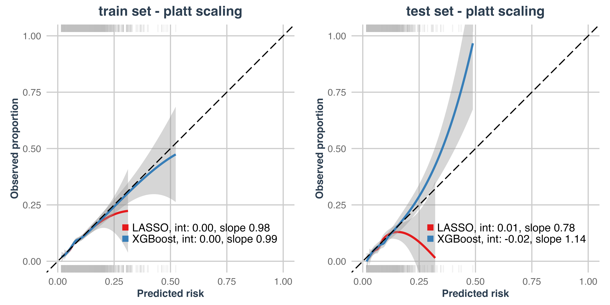
Calibration Intercept and Slope
- Perfect calibration: Intercept = 0, Slope = 1
- Slope > 1: Under estimation of risk
- Slope < 1: Over estimation of risk
Model Comparison Summary
Table 1. Comparison of data analysis algorithms
| Aspect | Logistic Regression (LR) | LASSO | XGBoost |
|---|---|---|---|
| Variable selection | Manual; relies on researcher’s expertise. | Automatically shrinks some coefficients to zero. | Selects variables by contribution to the loss function during training. |
| Interactions | Must be prespecified by the researcher. | Same as LR. | Captured automatically within tree structures. |
| Missing data | Requires imputation or removal before modeling. | Same as LR. | Handles missing data natively via optimal split direction. |
| Variable transformation | Assumes linearity (extendable via polynomials/splines); Continuous variables may need scaling; categorical require one-hot encoding. | Same as LR. | Only categorical variables require one-hot encoding. |
| Overfitting | Low risk but no built-in control. | Reduces overfitting via coefficient shrinkage. | Controlled by internal regularization and sequential weak learners. |
| Interpretability | High interpretability. | High interpretability. | Low; requires explainable AI tools (e.g., SHAP). |
| Large number of variables | Inefficient when p > N. | Handles high-dimensional data (p > N). | Handles high-dimensional and complex data well. |
ML Workflow in Practice
Step 1: Setting Up
First, we load the necessary packages and our synthetic dataset. Using the tidymodels framework helps keep our code clean and organized.
# Load Required Packages
library(tidyverse)
library(tidymodels)
source("scripts/00 - funcs.R")
tidymodels_prefer()
# Load synthetic data and prepare for modeling
load("data/syn_data.RData")
ml_df <- syn %>%
mutate(id = row_number(), .before = dmg_admission_age) %>% # Add ID column for realism
mutate(
outcome = factor(outcome, levels = c("not_centenarian", "centenarian"))
) %>% # Ensure correct outcome reference level
mutate_if(is.logical, as.factor) # Convert logicals to factors for modelingStep 2: Data Splitting & Resampling
We split our data into a training set (to build the model) and a test set (to evaluate it). We also create 10-fold cross-validation (CV) resamples from the training data for robust hyperparameter tuning.
Step 3: Data Preprocessing with recipes
A recipe is a powerful tidymodels object that defines all our preprocessing steps. These steps are only learned from the training data and then consistently applied to any other data (like the test set or new data), preventing data leakage.
Code
lasso_rec <- recipe(
outcome ~ .,
data = df_train,
strings_as_factors = FALSE
) %>%
update_role(id, new_role = "ID") %>% # Remove ID variables from predictors
step_rm(!!all_of(miss_10_vars)) %>% # Remove variables with >10% missing data
step_impute_knn(all_predictors(), neighbors = 3) %>% # Handle missing data with KNN imputation
step_date(
all_date_predictors(),
keep_original_cols = FALSE,
features = "month"
) %>% # Convert dates to month
step_other(
all_nominal_predictors(),
threshold = thresh_other,
other = "other_combined"
) %>% # Group infrequent categorical levels
step_dummy(all_nominal_predictors(), naming = new_sep_names) %>% # Create dummy variables
step_zv(all_numeric_predictors()) %>% # Remove zero variance predictors
step_corr(
all_numeric_predictors(),
threshold = thresh_corr,
method = "spearman"
) %>% # Remove highly correlated variables
step_normalize(all_numeric_predictors()) # Normalize numeric variables (Important for LASSO!)Code
xgb_rec <- recipe(outcome ~ ., data = df_train, strings_as_factors = FALSE) %>%
# Remove ID variables from predictors
update_role(id, new_role = "ID") %>%
step_date(
all_date_predictors(),
keep_original_cols = FALSE,
features = "month"
) %>% # Convert dates to month
step_integer(all_ordered_predictors()) %>% # Convert ordered factors to integers
step_other(
all_nominal_predictors(),
threshold = thresh_other,
other = "other_combined"
) %>% # Group infrequent categorical levels
step_unknown(all_nominal_predictors()) %>% # Create Unknown category for missing categorical data
step_dummy(all_nominal_predictors(), naming = new_sep_names) %>% # Create dummy variables
step_zv(all_numeric_predictors()) %>% # Remove zero variance predictors
step_corr(
all_numeric_predictors(),
threshold = thresh_corr,
method = "spearman"
) # Remove highly correlated variablesStep 4: Model Specification & Tuning
We define our models using the parsnip package. Note the penalty = tune() and trees = tune(), etc. These are placeholders that tell tidymodels we want to find the best values for these hyperparameters during tuning.
lasso_spec <- logistic_reg(penalty = tune(), mixture = 1) %>%
set_engine("glmnet") %>%
set_mode('classification')
xgb_spec <- boost_tree(
trees = tune(), # Number of boosting iterations (models to ensemble)
tree_depth = tune(), # Maximum depth of each tree (controls model complexity)
min_n = tune(), # Minimum samples required in a node before splitting
loss_reduction = tune(), # Minimum loss reduction required for splits (regularization)
sample_size = tune(), # Proportion of training data used for each tree
mtry = tune(), # Number of predictors randomly sampled at each split
learn_rate = tune() # Learning rate (controls overfitting)
) %>%
set_engine("xgboost") %>%
set_mode("classification") # Classification task - XGBoost can also do regressionStep 5: Building the workflow
A workflow object bundles our recipe and model specification. This is a convenient container that makes it easy to apply the same preprocessing and model fitting steps consistently.
Step 6: Hyperparameter Tuning - define grind
Now we find the optimal hyperparameters using our cross-validation folds.
For LASSO, we test 100 different values for the penalty (λ).
For XGBoost, we use a
grid_space_fillingdesign to efficiently test 500 different combinations of its many hyperparameters.
Code
# Create grid of penalty values for tuning
lambda_grid <- grid_regular(penalty(), levels = 100)
# Using space-filling design for efficient coverage of hyperparameter space
xgb_grid <- grid_space_filling(
trees(),
tree_depth(),
min_n(),
loss_reduction(),
sample_size = sample_prop(),
finalize(mtry(), df_train),
learn_rate(),
size = 500
)Step 6: Hyperparameter Tuning - define grind
The tune_grid function automates the process of fitting the model on each CV fold for each hyperparameter combination and evaluating the performance.
Code
# Tune hyperparameters using cross-validation and parallel processing
all_cores <- parallel::detectCores()
plan(multisession, workers = all_cores - 1)
set.seed(2020)
lasso_res <- tune_grid(
lasso_wf,
resamples = df_train_cv, # Use defined CV folds
grid = lambda_grid, # Use defined grid of penalty values
metrics = metric_set(roc_auc, pr_auc), # Evaluate using ROC-AUC and PR-AUC
control = ctl_grid_lasso # Use parallel processing controls
)
plan(sequential) # Return to sequential processingCode
# Tune hyperparameters using cross-validation and parallel processing
all_cores <- parallel::detectCores()
plan(multisession, workers = all_cores - 1)
set.seed(2020)
xgb_res <- tune_grid(
xgb_wf,
resamples = df_train_cv,
grid = xgb_grid,
metrics = metric_set(roc_auc, pr_auc), # Evaluate using ROC-AUC and PR-AUC
control = ctl_grid
)
plan(sequential) # Return to sequential processingStep 6: Hyperparameter Tuning - Tuning Results
Visualizing the tuning results helps us understand how hyperparameters affect performance. The plot shows the ROC AUC for each penalty value tested for the LASSO model. We want to pick the penalty that gives the highest AUC.
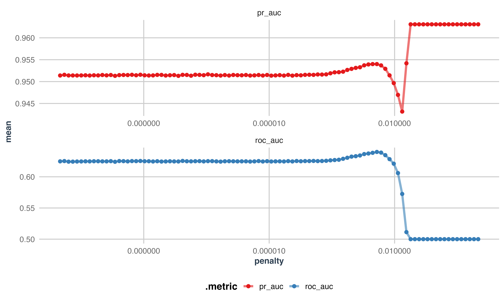
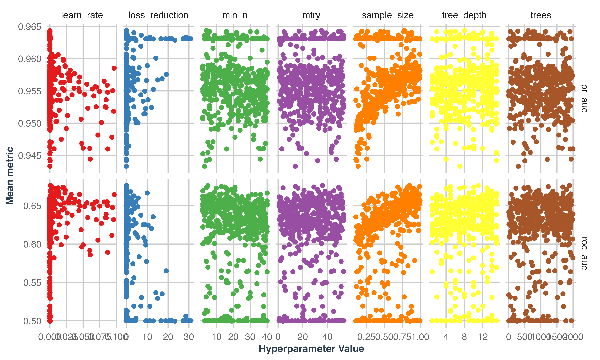
Step 7: Finalizing and Fitting
After tuning, we select the best hyperparameters and finalize our workflow.
Then, we use last_fit() which does two things:
Fits the final model on the entire training set.
Evaluates this final model on the unseen testing set.
This provides an unbiased estimate of how our model will perform on new data.
# Select best hyperparameters based on ROC AUC
lasso_best_auc <- select_best(lasso_res, metric = "roc_auc")
xgb_best_auc <- select_best(xgb_res, metric = "roc_auc")
# Finalize workflows
final_lasso <- finalize_workflow(lasso_wf, lasso_best_auc)
final_xgb <- finalize_workflow(xgb_wf, xgb_best_auc)
# Perform the final fit on the train/test split
final_lasso_fit <- final_lasso %>% last_fit(df_split)
final_xgb_fit <- final_xgb %>% last_fit(df_split)Step 8: Final Model Evaluation
The collect_metrics() function shows the performance on the hold-out test set. We can see that the XGBoost model achieved a higher ROC AUC and PR AUC compared to the LASSO model.
| Metric | LASSO | XGBoost |
|---|---|---|
| Accuracy | 0.933 | 0.933 |
| Brier Score | 0.062 | 0.068 |
| ROC AUC | 0.632 | 0.696 |
Explainable AI: Opening the Black Box
Why We Need Explainable AI (XAI)
While models like XGBoost are powerful, their complexity makes them “black boxes.” We can’t just look at coefficients to understand them.
XAI methods help us understand:
What features are most important? (Global interpretation)
Why did the model make a specific prediction for a single patient? (Local interpretation)
How does a feature’s value affect the prediction? (Feature effects)
This is crucial for clinical trust, model debugging, and discovering new insights.
LASSO Coefficients
LASSO provides direct interpretability through its coefficients.
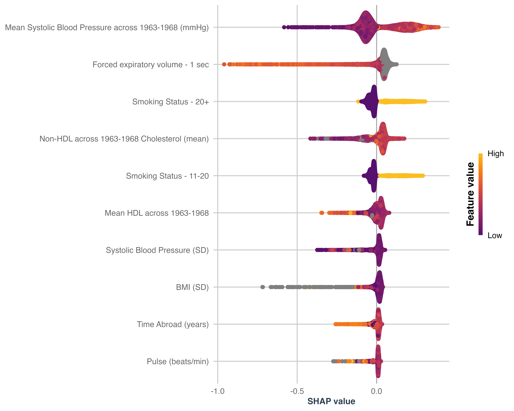
SHAP (SHapley Additive exPlanations)
SHAP is a leading XAI method based on game theory. It calculates the contribution of each feature to a prediction for each individual observation.
Analogy: Imagine the model prediction is a team’s final score. SHAP tells you how much “credit” each player (feature) deserves for that score, considering all possible combinations of players.
-
Output: A SHAP value for every feature for every prediction.
Positive SHAP value: Pushes the prediction towards the outcome (centenarian).
Negative SHAP value: Pushes the prediction away from the outcome.
SHAP Summary Plot
Systolic Blood Pressure is the most important feature.
Low SBP (purple dots) have positive SHAP values, meaning they push the prediction towards becoming a centenarian.
High SBP (yellow dots) have negative SHAP values, pushing the prediction away from it.
Smoking Status is also important.
- Being a smoker (yellow dot, since it’s a dummy variable) has a negative SHAP value, decreasing the chance of being a centenarian.
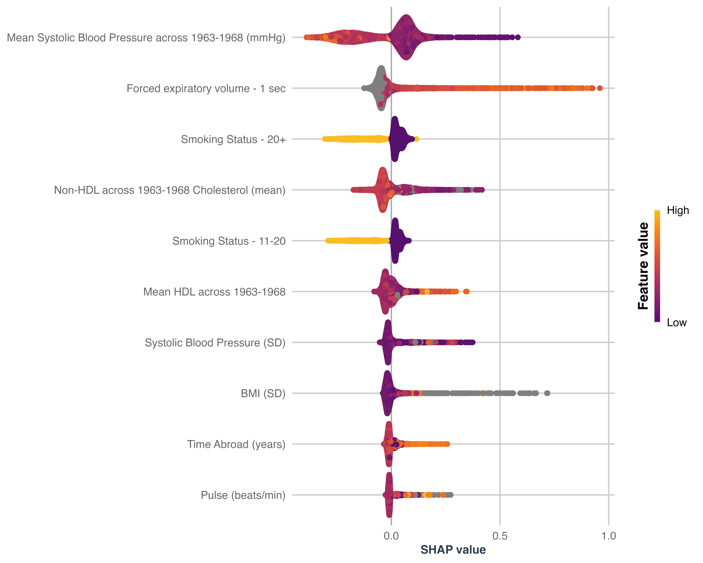
SHAP Dependence Plot
This plot shows how a single feature’s value affects its SHAP value across all samples. It helps us understand the relationship between a feature and the prediction outcome.
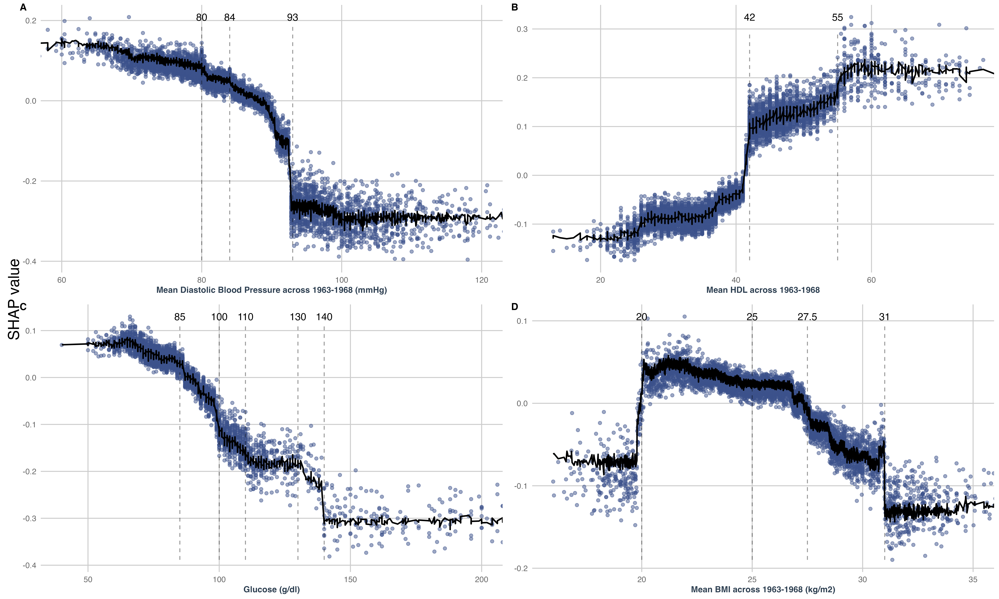
Summary & Take-Home Messages
Key Takeaways
We demonstrated a complete ML workflow for epidemiological prediction (not causation) using R and tidymodels.
The tidymodels framework provides a structured and safe workflow for building predictive models.
Preprocessing is crucial step to ensure data quality and model performance.
Cross-validation is essential for robustly tuning hyperparameters and avoiding overfitting.
More complex models like XGBoost can outperform simpler models like LASSO, but at the cost of interpretability.
Explainable AI methods like SHAP are vital for understanding and trusting complex “black box” models in a clinical context.

ML in Epidemiology | Advanced statistical methods